Agentic PACS 구현을 위한 SIIM 2025 Hackathon 분석 리포트¶
작성일: 2026년 2월 25일
분석 대상: SIIM 2025 Hackathon 발표 영상
출처: https://www.youtube.com/watch?v=laua1kZ5_RA
분석자: 집사 (GLM5 모델 기반 심야연구)
목차¶
- 개요
- 세션별 심층 분석
- FHIR Starters: Fireflow for Quality Metrics
- Agentic Vibes: Agentic Radiologist Assistant
- Hanging Protocols Should Not Be an Oxymoron
- Mission Extractable: Imaging Problem List Extractor
- Agentic PACS 구현을 위한 통합 인사이트
- 기술 아키텍처 제안
- 실행 로드맵
- 참고 자료
개요¶
본 리포트는 SIIM(Society for Imaging Informatics in Medicine) 2025 Hackathon에서 발표된 4개 핵심 세션을 분석하여, 집사가 개발하려는 "Agentic PACS"에 적용할 수 있는 기술적, 개념적 인사이트를 도출하는 것을 목적으로 한다.
분석 대상 세션¶
| 세션명 | 시간대 | 핵심 주제 |
|---|---|---|
| FHIR Starters | 19:10 – 31:36 | FHIR 기반 품질 지표 자동화 |
| Agentic Vibes | 31:44 – 42:51 | 에이전트 기반 영상의학 어시스턴트 |
| Hanging Protocols | 1:17:19 – 1:28:40 | 벤더 중립적 프로토콜 표준화 |
| Mission Extractable | 1:39:08 – 1:49:45 | LLM 기반 임상 컨텍스트 추출 |
세션별 심층 분석¶
1. FHIR Starters: Fireflow for Quality Metrics¶
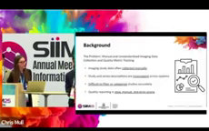
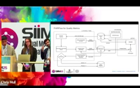
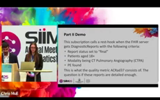
1.1 문제 정의¶
현재 영상 데이터 수집 프로세스의 핵심 문제점:
- 수동 중심 프로세스: 영상 검사 데이터 수집이 대부분 수동으로 이루어짐
- 비표준화된 기술: 시스템 간 설명(Description)이 상이하여 비교 및 분류 어려움
- 품질 지표 추출의 어려움: 필터링 및 품질 지표 추출이 지루하고 오류 발생 가능성 높음
- 느린 보고: 비정형 데이터와 수동 검토에 의존하여 보고가 지연됨
1.2 해결 방안: Fireflow for Quality Metrics¶
핵심 아키텍처:
[CTPA 스캔] → [DICOM 리스너] → [정규화] → [FHIR ImagingStudy 생성]
→ [FHIR 서버] → [방사선과 의사 리포트] → [FHIR Subscription 트리거]
→ [LLM 분석] → [품질 지표 (0/1)] → [품질 데이터베이스]
기술 스택: - DICOM Listener: 영상 메타데이터 자동 추출 및 정규화 - FHIR ImagingStudy Resource: 표준화된 영상 데이터 구조 - FHIR Subscription: 이벤트 기반 자동화 - Large Language Model: 진단 리포트에서 품질 지표 추출
1.3 품질 지표 예시: 폐색전증(PE) 위치 지정¶
- 분모(Denominator): CTPA 스캔 중 폐색전증이 감지된 검사 필터
- 분자(Numerator): 색전증 위치가 구체적으로 기술된 경우 (1) vs 미기술 (0)
- LLM 역할: 리포트에서 위치 지정 여부를 자동으로 판단
1.4 Agentic PACS 적용 포인트¶
| 적용 영역 | 구현 방안 |
|---|---|
| 자동화 파이프라인 | DICOM → FHIR 변환 자동화를 Agentic PACS 핵심 기능으로 통합 |
| 품질 모니터링 | 실시간 품질 지표 대시보드 구축 |
| LLM 통합 | 리포트 분석을 위한 LLM 파이프라인 구축 |
| 이벤트 기반 아키텍처 | FHIR Subscription을 활용한 반응형 시스템 |
2. Agentic Vibes: Agentic Radiologist Assistant¶
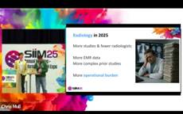
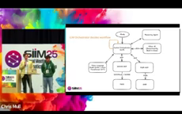
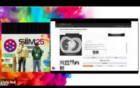
2.1 Agentic AI란?¶
정의: 자율적으로 목표를 추구하고, 의사결정을 내리며, 단일 프롬프트에 대한 응답이 아닌 전체 프로세스를 완료할 수 있는 AI 시스템
핵심 구성 요소: - Model Context Protocol (MCP) - Agent-to-Agent 통신 - Tool Use (도구 사용) - 자율적 의사결정
2.2 문제 정의: 2025년 영상의학의 현실¶
- 증가하는 검사량: 환자 및 검사 수는 증가
- 감소하는 인력: 방사선과 의사 수는 감소
- 증가하는 부담: 더 많은 EMR 데이터, 복잡한 과거 검사, 운영적 부담
2.3 해결 방안: Agentic Radiologist Assistant¶
핵심 개념: "모든 방사선과 의사에게 24/7 가상 레지던트 제공"
활용 시나리오:
| 단계 | 에이전트 역할 |
|---|---|
| 검사 전 | 관련 정보 수집 (EMR, 과거 검사) |
| 판독 중 | 컨텍스트 인식 정보 제공 |
| 서명 시 | 받아쓰기 솔루션에서 대리 행동 |
기술적 구현 예시:
- 과거 검사 검색: MCP를 통한 DICOMweb 서버 연결, 비전 임베딩 비교로 진정으로 관련 있는 과거 검사 식별
- EMR 데이터 통합: 검사실 결과, 과거 리포트, 임상 노트, 활력 징후 조회
- 임상 상관관계: 공기공간 병변 발견 시 → 발열, 백혈구 수, 기침 등 임상 징후와의 연관성 분석
2.4 아키텍처: 중앙 오케스트레이터¶
┌─────────────────────────┐
│ 중앙 오케스트레이터 │
│ (LLM 기반) │
└───────────┬─────────────┘
│
┌───────────────────────┼───────────────────────┐
│ │ │
▼ ▼ ▼
┌───────────────┐ ┌───────────────┐ ┌───────────────┐
│ 비전 모델 │ │ EMR 에이전트 │ │ 리포트 에이전트│
│ (Transformer) │ │ │ │ │
└───────────────┘ └───────────────┘ └───────────────┘
핵심 특징: - 중앙 LLM이 다음 단계를 스스로 결정 - 다중 에이전트와의 통신 - 컨텍스트 기반 자율적 작업 수행
2.5 Agentic PACS 적용 포인트¶
| 적용 영역 | 구현 방안 |
|---|---|
| 중앙 오케스트레이터 | PACS 작업 흐름을 관리하는 LLM 기반 오케스트레이터 구현 |
| 다중 에이전트 시스템 | 비전, EMR, 리포트, 품질 등 전문화된 에이전트 구축 |
| MCP 통합 | Model Context Protocol을 통한 표준화된 도구 인터페이스 |
| 컨텍스트 인식 | 현재 검사와 관련된 모든 정보를 자동으로 수집하여 판독 지원 |
3. Hanging Protocols Should Not Be an Oxymoron¶
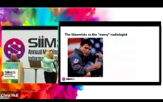
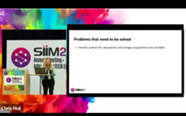
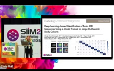
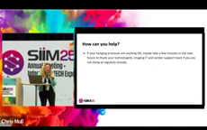
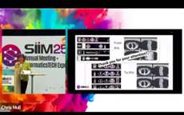
3.1 문제 정의: Hanging Protocol의 현실¶
현재 상황: - 방사선과 의사는 검사 목록에서 아이콘을 드래그하여 윈도우에 배치 - 일부 "매버릭" 의사들은 완벽한 hanging protocol을 설정해 원클릭으로 모든 것이 준비됨 - 대부분의 의사는 벤더와 매일 최적화 작업을 할 시간이 없음 - 전문성 부족으로 복잡한 프로토콜 설정이 어려움
3.2 해결 과제¶
핵심 질문: "학술 측면에서 범용 hanging protocol을 생성할 수 있는가?"
해결해야 할 문제들:
| 문제 | 설명 |
|---|---|
| 벤더별 명칭 차이 | 각 벤더가 서로 다른 시퀀스 이름 사용 |
| 시퀀스 이름 비표준화 | 영상 획득 방식에 따라 다른 명칭 사용 |
| 기관별 프로토콜 | 일부 기관은 독자적인 혁신적 시퀀스 사용 |
| 표시 순서 차이 | 기관 및 프로토콜에 따라 시퀀스 표시 순서가 다름 |
예시: 뇌 영상에서 - 일부 기관: DWI(Diffusion Weighted Imaging)를 첫 번째 시퀀스로 (빠르고 핵심 진단 가능) - 다른 기관: T1 Sagittal을 첫 번째로
3.3 목표¶
- 벤더 중립적 접근: 모든 PACS 벤더에 적용 가능한 가이드라인 수립
- 기본 설정 표준화: 개인 선호를 구축할 수 있는 범용 표시 기본 설정 정의
- 반복 작업 제거: 모든 방사선과 의사에 대해 반복적인 설정 프로세스 제거
3.4 Agentic PACS 적용 포인트¶
| 적용 영역 | 구현 방안 |
|---|---|
| 지능형 Hanging Protocol | AI가 검사 유형과 사용자 선호를 학습하여 최적 배치 자동 수행 |
| 시퀀스 인식 | DICOM 태그 분석을 통한 시퀀스 자동 식별 및 정규화 |
| 개인화 엔진 | 사용자별 선호를 학습하여 개인화된 프로토콜 제안 |
| 벤더 독립적 레이어 | 다양한 PACS 벤더 간 호환성을 위한 추상화 계층 |
4. Mission Extractable: Imaging Problem List Extractor¶
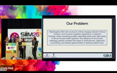
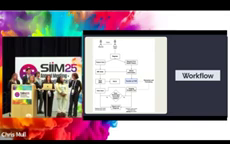
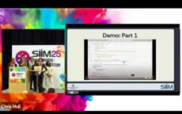
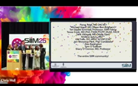
4.1 문제 정의: 임상 컨텍스트 부재¶
시나리오: 50세 환자 레오 - 15년 전 스키 중 ACL 파열 → OHSU에서 MRI 촬영 - 15년 후 딸 축구 연습 지도 후 동일 무릎 통증 → Providence 병원에서 MRI 촬영 - 문제: 방사선과 의사가 수술 이력에 접근하지 못해 새로운 부상인지 이전 수술 결과인지 불확실
핵심 문제: - 방사선과 의사는 필수적인 영상 관련 임상 컨텍스트 부족 - 과거 데이터가 단절된 의료 시스템에 저장되어 있음 - 진단 불확실성, 잠재적 오류, 환자 치료 개선 기회 누락
4.2 해결 방안: Imaging Problem List Extractor¶
목표:
| 목표 | 설명 |
|---|---|
| 병원 간 통신 개선 | 다양한 병원 시스템 간 핵심 환자 이력 공유 |
| 효율성 향상 | 더 스마트하고 빠른 영상의학 리포트 작성 지원 |
| 구조화된 문제 목록 | 가장 중요하고 관련성 높은 영상의학 정보를 우선 표시 |
4.3 아키텍처¶
┌──────────────┐ ┌──────────────┐
│ OHSU EHR │ │ Providence │
│ FHIR Server │ │ FHIR Server │
└──────┬───────┘ └──────┬───────┘
│ │
└────────┬───────────┘
▼
┌───────────────────────┐
│ Radiology Sidecar │
│ FHIR Server │
│ ┌─────────────────┐ │
│ │ LLM 엔진 │ │
│ │ + 지식 베이스 │ │
│ └─────────────────┘ │
└───────────┬───────────┘
▼
┌───────────────────────┐
│ 구조화된 문제 목록 │
│ (방사선과 의사에게) │
└───────────────────────┘
4.4 가정 및 전제 조건¶
- 병원 간 데이터 접근: 두 번째 병원(Providence)이 환자의 이전 진료 기관을 알고 있음
- FHIR 기반 데이터 공유: 이전 병원(OHSU)의 기록에 쉽게 접근 가능
- 공통 데이터 요소(CDE): 모든 관련 상태에 연관된 CDE가 있어 LLM이 데이터를 구조화 가능
4.5 Agentic PACS 적용 포인트¶
| 적용 영역 | 구현 방안 |
|---|---|
| 크로스 시스템 통합 | 다중 FHIR 서버 간 환자 데이터 통합 조회 |
| LLM 기반 구조화 | 비정형 리포트를 구조화된 문제 목록으로 변환 |
| 임상 컨텍스트 제공 | 판독 시 관련 과거 이력을 자동으로 요약 제공 |
| 지식 베이스 구축 | CDE 기반 구조화를 위한 의학 지식 베이스 구축 |
Agentic PACS 구현을 위한 통합 인사이트¶
핵심 기술 스택¶
| 계층 | 기술 | 출처 세션 |
|---|---|---|
| 데이터 표준 | FHIR R4 (ImagingStudy, DiagnosticReport, Patient) | FHIR Starters, Mission Extractable |
| 통신 프로토콜 | DICOMweb, FHIR Subscription | FHIR Starters, Agentic Vibes |
| 에이전트 프레임워크 | Model Context Protocol (MCP) | Agentic Vibes |
| 오케스트레이션 | LLM 기반 중앙 오케스트레이터 | Agentic Vibes |
| 비전 AI | Foundation Models, Vision Transformers | Agentic Vibes |
| 자연어 처리 | LLM (리포트 분석, 구조화) | FHIR Starters, Mission Extractable |
| UI/UX | 지능형 Hanging Protocol | Hanging Protocols |
아키텍처 패턴¶
1. 이벤트 기반 파이프라인 (FHIR Starters)¶
Agentic PACS 적용: - 새로운 검사 수신 시 자동으로 관련 정보 수집 - 판독 완료 시 품질 지표 자동 계산 - 이상 징후 자동 감지 및 알림
2. 멀티 에이전트 오케스트레이션 (Agentic Vibes)¶
Agentic PACS 적용: - 비전 에이전트: 영상 분석, 이상 감지 - EMR 에이전트: 임상 데이터 조회 - 리포트 에이전트: 판독문 작성 지원 - 품질 에이전트: 품질 지표 모니터링
3. 컨텍스트 통합 (Mission Extractable)¶
Agentic PACS 적용: - 다양한 소스에서 환자 정보 통합 - 과거 검사와 현재 검사의 자동 비교 - 임상 컨텍스트 기반 판독 제안
기술 아키텍처 제안¶
전체 시스템 구성도¶
┌─────────────────────────────────────────────────────────────────────────┐
│ Agentic PACS 플랫폼 │
├─────────────────────────────────────────────────────────────────────────┤
│ ┌─────────────────────────────────────────────────────────────────┐ │
│ │ 중앙 오케스트레이터 (LLM) │ │
│ │ - 작업 흐름 관리 │ │
│ │ - 에이전트 간 통신 조정 │ │
│ │ - 컨텍스트 기반 의사결정 │ │
│ └───────────────────────────────┬─────────────────────────────────┘ │
│ │ │
│ ┌───────────────┬───────────────┼───────────────┬───────────────┐ │
│ │ │ │ │ │ │
│ ▼ ▼ ▼ ▼ ▼ │
│ ┌─────────┐ ┌─────────┐ ┌─────────┐ ┌─────────┐ ┌─────────┐ │
│ │ 비전 │ │ EMR │ │ 리포트 │ │ 품질 │ │Hanging │ │
│ │ 에이전트│ │ 에이전트│ │ 에이전트│ │ 에이전트│ │Protocol │ │
│ │ │ │ │ │ │ │ │ │ 에이전트│ │
│ │- 영상분석│ │- 임상데이터│ │- 판독지원│ │- 지표계산│ │- 자동배치│ │
│ │- 이상감지│ │- 과거이력│ │- 구조화 │ │- 모니터링│ │- 개인화 │ │
│ │- 임베딩 │ │- 약물정보│ │- 템플릿 │ │- 알림 │ │- 최적화 │ │
│ └────┬────┘ └────┬────┘ └────┬────┘ └────┬────┘ └────┬────┘ │
│ │ │ │ │ │ │
├──────┴───────────┴───────────┴───────────┴───────────┴───────────────────┤
│ 데이터 통합 계층 │
│ ┌─────────┐ ┌─────────┐ ┌─────────┐ ┌─────────┐ ┌─────────┐ │
│ │DICOMweb │ │ FHIR │ │ EMR │ │ LLM │ │지식베이스│ │
│ │ 서버 │ │ 서버 │ │ API │ │ API │ │ (CDE) │ │
│ └─────────┘ └─────────┘ └─────────┘ └─────────┘ └─────────┘ │
└─────────────────────────────────────────────────────────────────────────┘
핵심 모듈 상세¶
1. 중앙 오케스트레이터¶
역할: - 모든 작업 흐름의 중앙 제어 - 에이전트 간 통신 및 협업 조정 - 컨텍스트 기반 다음 단계 결정
구현 기술: - LLM (Claude 3.7 / GPT-4 / GLM-4) - MCP (Model Context Protocol) - 상태 관리 (Redis/PostgreSQL)
2. 전문 에이전트 구성¶
| 에이전트 | 핵심 기능 | 참조 기술 |
|---|---|---|
| 비전 에이전트 | 영상 분석, 이상 감지, 시각적 임베딩 | Foundation Models, Vision Transformers |
| EMR 에이전트 | 임상 데이터 조회, 환자 이력 통합 | FHIR API, EMR Integration |
| 리포트 에이전트 | 판독문 작성 지원, 구조화, 템플릿 | LLM, NLP |
| 품질 에이전트 | 품질 지표 계산, 모니터링, 알림 | FHIR Subscription, Analytics |
| Hanging Protocol 에이전트 | 자동 배치, 개인화, 최적화 | AI 학습, 규칙 엔진 |
3. 데이터 통합 계층¶
FHIR 서버 구성: - ImagingStudy Resource: 영상 메타데이터 - DiagnosticReport Resource: 판독 결과 - Patient Resource: 환자 정보 - Condition Resource: 문제 목록 - Procedure Resource: 시술 이력
이벤트 처리: - FHIR Subscription: 실시간 이벤트 구독 - DICOM Listener: 영상 수신 이벤트 - Webhook: 외부 시스템 연동
실행 로드맵¶
Phase 1: 기반 구축 (3개월)¶
| 주차 | 작업 내용 | 산출물 |
|---|---|---|
| 1-4주 | FHIR 서버 구축 및 DICOMweb 연동 | 기본 데이터 파이프라인 |
| 5-8주 | 중앙 오케스트레이터 프로토타입 | LLM 기반 작업 흐름 관리 |
| 9-12주 | 기본 에이전트 2개 구현 (비전, EMR) | 초기 에이전트 프레임워크 |
Phase 2: 핵심 기능 개발 (6개월)¶
| 주차 | 작업 내용 | 산출물 |
|---|---|---|
| 1-8주 | 비전 에이전트 고도화 | 영상 분석, 이상 감지 |
| 9-16주 | 리포트 에이전트 구현 | 판독 지원, 구조화 |
| 17-24주 | 품질 에이전트 구현 | 품질 지표 자동화 |
Phase 3: 고급 기능 및 통합 (6개월)¶
| 주차 | 작업 내용 | 산출물 |
|---|---|---|
| 1-8주 | Hanging Protocol 에이전트 | 지능형 자동 배치 |
| 9-16주 | 크로스 시스템 통합 | 다중 병원 데이터 통합 |
| 17-24주 | UI/UX 통합 및 최적화 | 완전한 Agentic PACS |
Phase 4: 운영 및 개선 (지속)¶
- 사용자 피드백 기반 개선
- 새로운 에이전트 추가
- 성능 최적화 및 확장
참고 자료¶
분석 대상 영상¶
- 제목: SIIM 2025 Hackathon Project Presentations
- URL: https://www.youtube.com/watch?v=laua1kZ5_RA
- 분석 세션: 4개 (총 약 45분)
기술 표준¶
- FHIR R4: https://www.hl7.org/fhir/
- DICOMweb: https://www.dicomstandard.org/using/dicomweb
- Model Context Protocol: https://modelcontextprotocol.io/
관련 프로젝트¶
- Fireflow for Quality Metrics (Team FHIR Starters)
- Agentic Radiologist Assistant (Team Agentic Vibes)
- Universal Hanging Protocols (Team Hanging Protocols)
- Imaging Problem List Extractor (Team Mission Extractable)
결론¶
SIIM 2025 Hackathon에서 발표된 4개 세션은 Agentic PACS 구현을 위한 핵심 기술과 아키텍처 패턴을 제시한다:
- FHIR 기반 표준화: FHIR Starters는 품질 지표 자동화를 위한 FHIR 활용 방법을 보여줌
- 에이전트 기반 아키텍처: Agentic Vibes는 중앙 오케스트레이터와 다중 에이전트 시스템의 강력함을 입증
- 사용자 경험 최적화: Hanging Protocols는 벤더 중립적 접근의 중요성을 강조
- 컨텍스트 통합: Mission Extractable은 크로스 시스템 데이터 통합의 가치를 보여줌
이러한 인사이트를 통합하여, 중앙 LLM 오케스트레이터가 다양한 전문 에이전트를 조율하는 멀티 에이전트 아키텍처가 Agentic PACS의 핵심이 되어야 한다. FHIR를 통한 데이터 표준화, MCP를 통한 에이전트 통신, 그리고 지속적인 학습을 통한 개인화가 성공의 열쇠가 될 것이다.
본 리포트는 심야연구 프로젝트의 일환으로 GLM5 모델을 활용하여 작성되었습니다.